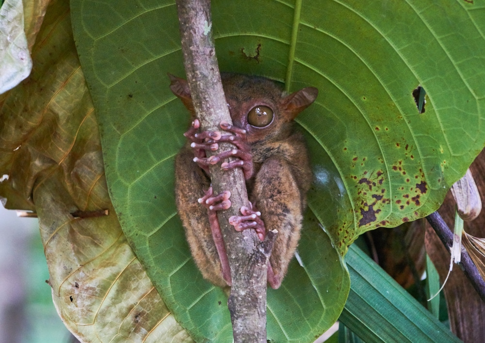
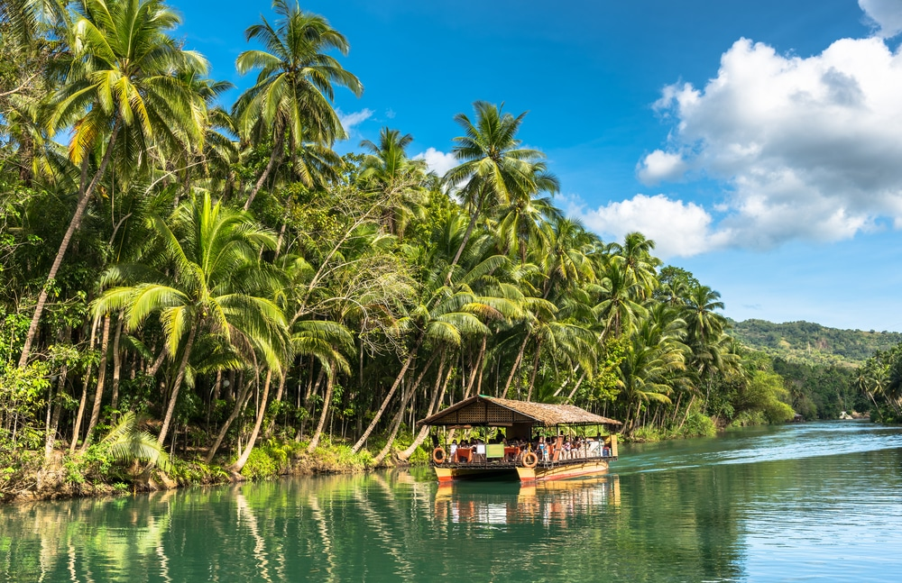
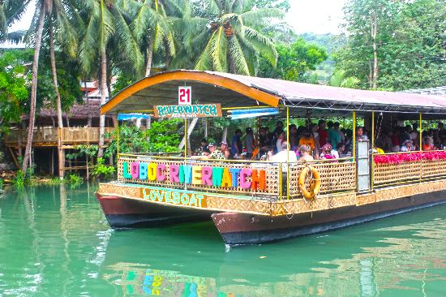
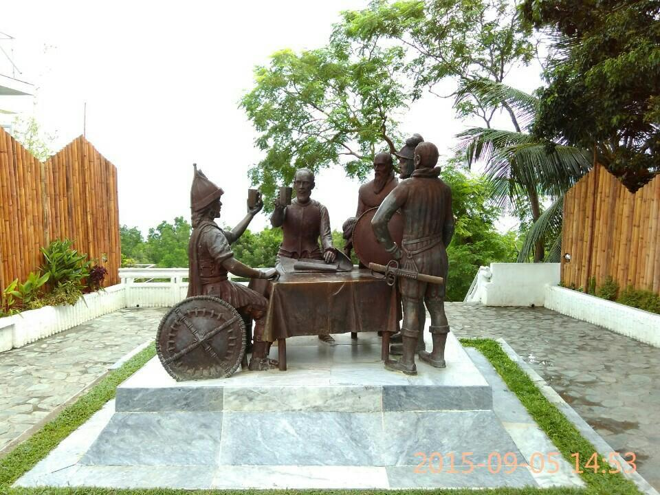
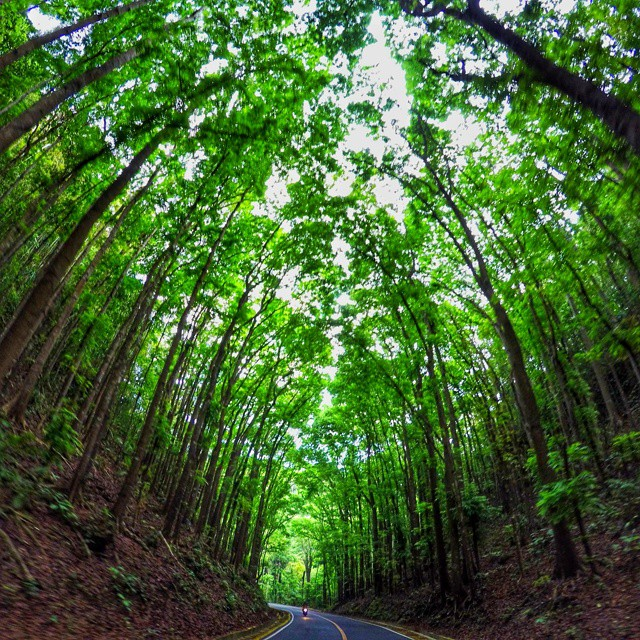
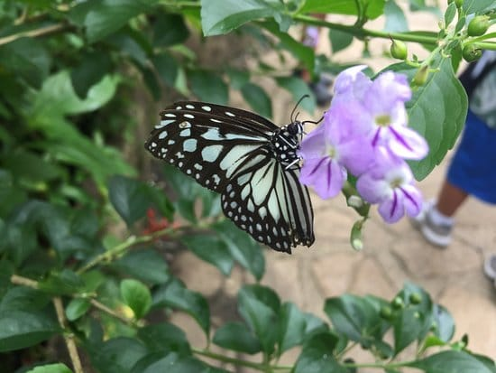

The Chocolate Hills are by far the most popular tourist attraction on Bohol Island and once you see it, it’s easy to understand why. Here lay hundreds of symmetrical green mountainous hills as far as the eye can see.During the dry season, these hills take on a milk-chocolate color- hence “Chocolate Hills”. During the rainy season, they are lush and green.
Visit the Bamboo Hanging Bridge where you’ll walk across a bamboo-weaved bridge over the slow flowing river. Each step on the bridge gives you a little tingle up your back as it feels quite delicate- but not to worry as the bridge is suspended with sturdy cables that won’t let you fall!

Tarsiers- locally known as ‘mamag’- are an endangered species and would be close to extinction if it weren’t for the efforts of the Tarsier Conservatory in Bohol. Tarsiers are considered a “dependent” species meaning that they cannot thrive in the wild on their own. Every visit to the Tarsier Conservatory helps fund efforts and habitat to keep these cute little creatures alive.
If you’d like to float down the Loboc River in comfort, than join the organized cruise selling tickets at the shore. The boat resembles a large floating house with a thatched roof and large dining room.You’ll cruise down the river looking at the sights while enjoying a buffet style lunch. There is a live band that plays a collection of songs from around the world to appeal to the assembly of international guests on board.
 It will only take you five minutes to stop and gather the story that this bronze structure is here to tell. Set with the sea as the backdrop, the Blood Compact Monument features 5 soldiers gathered round a table making a toast. With a few drops of blood, a pact was made between Spanish General Miguez Lopez de Legazpi and the Native Filipino people who vowed to work together.

Rice terraces, with their sprawling flat plains and bright green colors, are a signature of Asia. In mucky plains of muddy water, farmers plant rice seeds that grow long green stems creating gorgeous landscapes. It isn’t that rice needs water to grow, but rather, the water ensures that the rice do not become compromised with fungus or disease.
No boats are involved in getting from Bohol to Panglao- just a small bridge. Spend the day on this beautiful white sand beach playing in the water, getting a relaxing massage, or sipping some cocktails at a beachfront bar. This island is great for romantic candlelit dinners that offer seafood platters with huge shrimp, lobster, and fish! Hire a tour boat to take you snorkeling or join a dive shop for an underwater exploration.
The Bohol Forest is a man-made mahogany forest stretching in a two-kilometer stretch of densely planted Mahogany trees located in the border of Loboc and Bilar towns. Before and after this man-made forest are the naturally grown forests of Loboc and Bilar which are thick with a kaleidoscope of green foliage, different species of trees and giant ferns lining the road.
Butterflies, spiders, centipedes, caterpillars, birds, and flowers- come witness a dense collection of natural beauty at the Bohol Habitat Conservation Conservatory.Walk with a guide who will point out fauna indigenous to the island, persuade you to let bugs crawl on your arm, and take a few funny photos while you’re at it. Afterwards, stop by the restaurant and ice cream shop near the entrance to try some all-natural ice cream!
Come and enjoy the scenery of the new famous tourist spot in Bohol, the Bohol's Mirror of the World.It is located in Brgy. Libjo Sikatuna Bohol. There you can see the different famous structures from the different places or countries of the world, it has also a botanical garden.


© Sernel Miranda Asunto (2019)